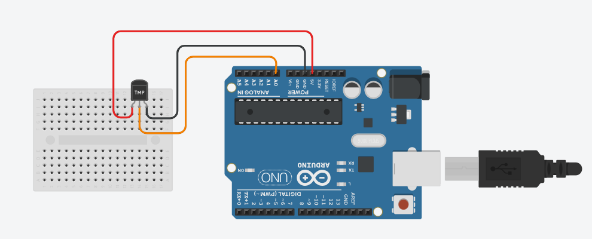

Temperature Sensor Project using Arduino
The temperature sensor project teaches you how to read analog and digital sensors to measure temperature. This is a fundamental skill for building weather stations, climate monitoring systems, and IoT projects.
BeginnerComponents Required
- Arduino Uno (or compatible board)
- TMP36 Temperature Sensor
- Breadboard
- Jumper Wires
- USB Cable
- Optional: 16x2 LCD Display (to show temperature readings)
Circuit Connections
The TMP36 is an analog temperature sensor that's easy to use and requires no special libraries. It provides a voltage output proportional to the temperature. Make sure the Arduino is not connected to USB while wiring.
TMP36 Sensor Pin Configuration:
The TMP36 has three pins when viewed from the flat side facing you:
- Left pin: VCC (Power Supply)
- Middle pin: VOUT (Output Voltage)
- Right pin: GND (Ground)
Wiring Steps:
- Connect the VCC pin (left) to 5V on Arduino.
- Connect the GND pin (right) to GND on Arduino.
- Connect the VOUT pin (middle) to analog pin A0 on Arduino.

Arduino Code
TMP36 Temperature Sensor Code:
// TMP36 Temperature Sensor
// Connect VOUT to A0
const int temperaturePin = A0;
void setup() {
Serial.begin(9600);
}
void loop() {
// Read analog value from TMP36
int analogValue = analogRead(temperaturePin);
// Convert analog value to voltage
// Arduino reads 0-1023 for 0-5V
float voltage = analogValue * (5.0 / 1023.0);
// TMP36 formula: (voltage - 0.5) * 100
// Each degree is 10mV, and 0V = -50°C
float temperatureC = (voltage - 0.5) * 100.0;
// Convert to Fahrenheit (optional)
float temperatureF = (temperatureC * 9.0 / 5.0) + 32.0;
// Print to Serial Monitor
Serial.print("Temperature: ");
Serial.print(temperatureC);
Serial.print("°C / ");
Serial.print(temperatureF);
Serial.println("°F");
delay(1000); // Wait 1 second before next reading
}
About the TMP36 Sensor
The TMP36 is a precision integrated circuit temperature sensor that requires no special libraries. It operates from -40°C to +125°C and outputs an analog voltage proportional to temperature.
Key Features:
- Precision: ±2°C accuracy at room temperature
- Simple analog output - no communication protocol needed
- Low power consumption
- Three-pin package - VCC, VOUT, GND
Upload the Code
- Connect the Arduino board to your computer using the USB cable.
- Open the Arduino IDE and paste the code into a new sketch.
- Select the correct board and port from the Tools menu.
- Click the Upload button.
- Open the Serial Monitor (Ctrl + Shift + M) to see temperature readings.
Code Explanation
Let us understand how the Arduino code works step by step. This will help you modify the project later and build more projects.
Reading the Analog Value
analogRead(temperaturePin) reads the voltage from the TMP36 sensor.
Arduino converts the analog voltage (0-5V) to a digital value (0-1023).
Converting Analog to Voltage
voltage = analogValue * (5.0 / 1023.0) converts the digital reading back to voltage.
The 5V / 1023 ratio represents the resolution of the Arduino's analog-to-digital converter.
TMP36 Temperature Formula
The TMP36 outputs 10mV per degree Celsius, with 500mV at 0°C:
temperatureC = (voltage - 0.5) * 100.0
This means:
- At 0°C: voltage = 0.5V
- At 25°C: voltage = 0.75V
- At -40°C: voltage = 0.1V
- At 125°C: voltage = 1.75V
Fahrenheit Conversion
To convert Celsius to Fahrenheit, we use: F = (C × 9/5) + 32
Serial Communication
Serial.begin(9600) initializes serial communication at 9600 baud rate.
Serial.print() sends data to the Serial Monitor for viewing on your computer.
Common Mistakes & Troubleshooting
- No temperature reading: Check that the TMP36 is properly connected. Verify VCC is 5V, GND is ground, and VOUT is on A0.
- Temperature shows incorrect values: Make sure the analog pin is set to A0 in the code. Double-check the TMP36 pin connections (left=VCC, middle=VOUT, right=GND).
- Readings are unstable or fluctuating: Take multiple analog readings and average them. Add a small delay between readings for stability.
- Sensor reads too hot or too cold: Ensure the sensor is not touching the Arduino board or other heat sources. Give it a moment to stabilize after power-on.
- Offset error (readings consistently off by a certain amount): The TMP36 may have a small calibration offset. Adjust the 0.5V offset in the formula if needed.
- Upload error or code won't compile: Make sure there are no typos in the code. Verify the correct board and COM port are selected in Arduino IDE.
What You Learned
- How to read analog sensor values using Arduino's ADC (Analog-to-Digital Converter).
- Converting analog readings to voltage values.
- Understanding the TMP36 temperature sensor's output characteristics.
- Converting voltage to temperature using sensor-specific formulas.
- Displaying real-time data on the Serial Monitor.
- Troubleshooting common temperature sensor issues.
- Building foundations for weather monitoring and IoT projects.